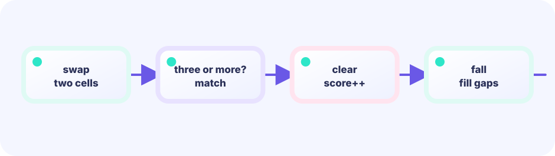

Remember the run start
Keep start at the first matching color. When the type changes at x, the run length is x-start.
runLength := x - start★★☆☆☆ / PLAYABLE
Read every row and column to collect all cells in runs of three or more.
FIRST-TIME READER
Find where this one line is used, then follow how its value changes on screen. This is the shared Update → Draw skeleton for the whole path; the numbered steps below add one system at a time.
ONE RULE TO TRACE
Match the explanation to this line, then test the change in the game.
marked[Cell{x,y}] = true
PLAYABLE / WEBASSEMBLY
Tap SCAN or press Space to inspect rows and columns. Read four boards to clear.
DEEP DIVE / LINE SCAN
Move from a row's left edge and remember the section until its type changes. If its length is at least three, add every coordinate to a set named marked. Then repeat for columns.
Keep start at the first matching color. When the type changes at x, the run length is x-start.
runLength := x - startIf the run is long enough, add start through the cell before x. The same rule handles runs of four and five.
for i := start; i < x; i++ { mark(i,y) }A center cell found both horizontally and vertically uses the same map key, so it remains one unique cell.
marked[point{x,y}] = trueTRY IT / SCAN
Scan walks rows and columns for equal runs of length ≥ 3. Lit cells are clear candidates. Clear+fall drops gems into holes and refills.
After every swap, run scan → clear → gravity in that order.
THE SCAN RULE
run length ≥ 3thenmark those cellsDon’t start with fancy shapes—count runs first and bugs shrink.
IN THE REAL GAME
Keep directions separate: first all rows, then all columns, using two simple loops.
for y := 0; y < rows; y++ {
scanRow(y, marked)
}
for x := 0; x < cols; x++ {
scanColumn(x, marked)
}WHY TWO PASSES?
Thinking about one direction at a time makes index mistakes easier to find.
WHY A SET?
It prevents the center of a T or cross from being cleared or scored twice.
TRY NEXT
Find a cell marked by both directions and give it a special outline.
FEEDBACK